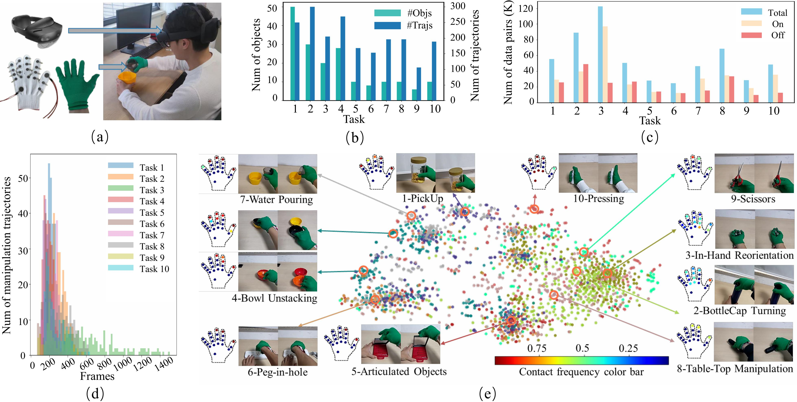
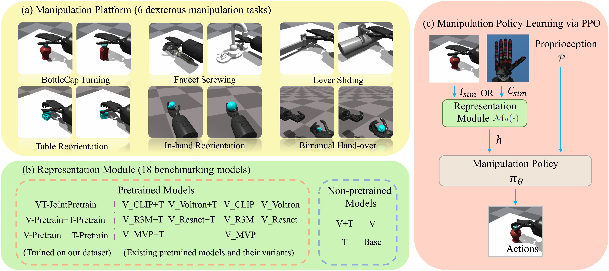

Abstract
Vision and touch are essential sensory modalities in human manipulation. While prior works have leveraged human manipulation videos for pretraining robotic skills, most are limited to vision-language modalities and simple grippers. To address this, we collect a large-scale visual-tactile dataset of humans performing 10 daily manipulation tasks across 182 objects. Our dataset is the first to support complex dexterous manipulation with visual-tactile information.
We introduce a benchmark of 6 dexterous tasks and develop a reinforcement learning-based visual-tactile policy learning framework. We compare 17 baseline and pretraining strategies to assess the impact of different modalities.
Key results show: (1) incorporating sparse binary tactile signals boosts policy performance by ~20%, (2) joint visual-tactile pretraining improves generalization across tasks, and (3) the visual-tactile policy is robust to sensor noise and viewpoint variation.
Dataset Statistics
★ Overview of our collected visual-tactile dataset, which includes 10 diverse manipulation tasks and 182 objects. (a) Our collection system. (b) The number of trajectories and objects. (c): The number of total frames (On: frames w/ contact; Off: frames w/o contact ). (d) The distribution of the number of frames. (e) t-SNE of the tactile signals
Benchmark Overview
★ The proposed benchmark includes 6 complex dexterous manipulation tasks with vision-tactile RL training and evaluation. It is designed to test generalization across tasks and modalities. (a) shows the six tasks of our manipulation platform; (b) lists the 18 pretrained and non-pretrained models in our benchmark; (c) is the policy learning framework combines proprioceptive inputs and perception representations to guide actions within an MDP, with skills learned via PPO.
Video
BibTeX
 |
@inproceedings{liu2025vtdexmanip,
|
Contact
For questions and collaborations, contact: